Part 1 of 2
System Diagnostic ModeStart-up procedure and Diagnosis Menu
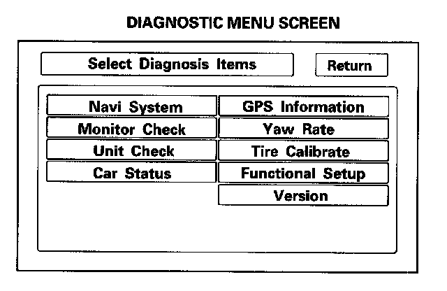
1. Turn the ignition switch to the ON (II) position.
Press and hold the Menu, the Map/Guide, and the Cancel buttons. Keep them pressed for approximately 3 seconds. The display screen then goes directly to the Diagnostic Menu.
2. After the display changes to the Diagnostic Menu, select the item you want to check, and the test will begin. To return to the previous screen, select "Return".
- Navi System (Link)
- Monitor Check
- Unit Check
- Car Status
- GPS Information
- Yaw Rate
- Tire Calibrate
- Functional Setup
- Version
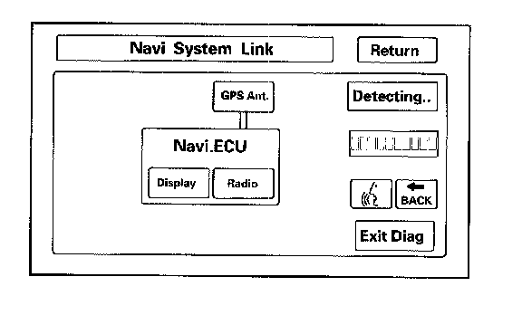
Navi System Link
- This diagnostic step tests the cables connecting the navigation components. Ensure that the ignition switch is in the ON (II) position. When the diagnosis begins, you hear a "bong" sound. The system is in a "Detecting" mode, and is waiting for all the items in white to be tested. This includes the voice control switch (TALK/BACK buttons), and the microphone. Press the TALK button on the steering wheel, and in a normal voice, say "testing". The Talk indicator on the screen should turn green, and the voice level indicator should move to at least the 6th bar to pass. Next, press the BACK button. The "Cancel" indicator should turn green.
- If all of the communication lines connecting the system components, and the TALK/BACK buttons/microphone check out OK (all block diagram items green), then the "OK" indicator turns green.
- If there is a problem with the system, the faulty system component item turns red, and the screen will show "NG" in red. Use the troubleshooting index, and other diagnostic screens to help locate the problem.
- The indicator on the screen may not change until you cycle the ignition switch. After repairing the affected cable or system, repeat this diagnostic.
NOTE: Green boxes and green "OK" indicate that the communications lines (cables) are intact. This diagnostic does not necessarily imply that the individual components are functioning properly. For instance, the GPS antenna wire may be crushed, but still show as "green". A road test, or other diagnostic may be necessary to find the problem.
- Select "Return" to return to the Diagnostic Menu, or the "Exit Diag" button to exit.
NOTE: The Mic Level indicator must reach the 6th bar or greater to pass the test.
Monitor Check
Overview of navigation display
The illumination input from the gauge brightness control provides back lighting for the buttons surrounding the screen.
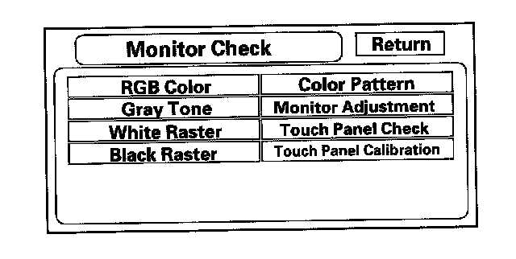
These screens allow troubleshooting of the navigation display. Select the item you want to troubleshoot, and follow the diagnostic instructions.
- RGB Color
- Gray Tone
- White Raster
- Black Raster
- Color Pattern
- Monitor Adjustment
- Touch Panel Check
- Touch Panel Calibration
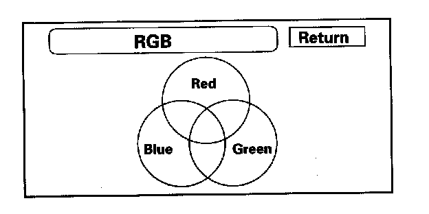
RGB Color
This screen verifies that the navigation display is receiving the video (R, G, B and Composite sync) signals properly. The three primary colors should all be shown without distortion. The combination of all three should produce a central white section. If any of the colors are missing, troubleshoot for the color signal. If the picture has lines in it, or scrolls horizontally or vertically, troubleshoot for a Composite sync problem.
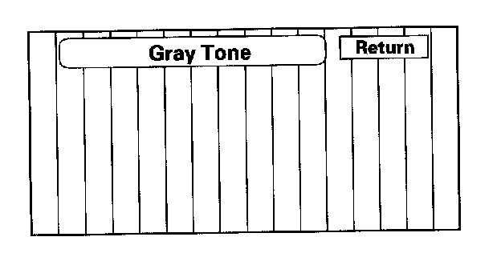
Gray Tone
This screen looks for problems with contrast. You should be able to see the changes from bar to bar across the scale.
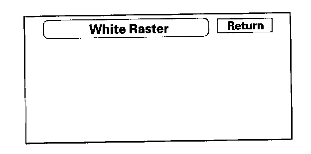
White Raster
This diagnostic screen checks for pixels that may be "dead" (off). The entire display must be white. If pixels are "dead", replace the navigation unit.
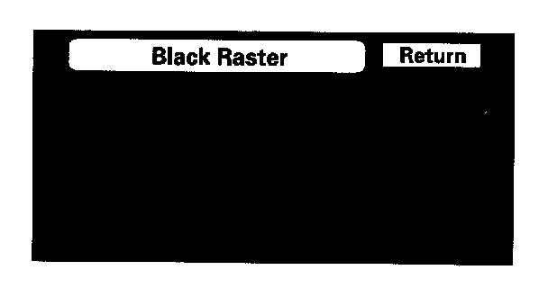
Black Raster
The entire display must be black. This diagnostic screen checks for pixels that may be "stuck" (on). If pixels are "stuck" on, replace the navigation unit.
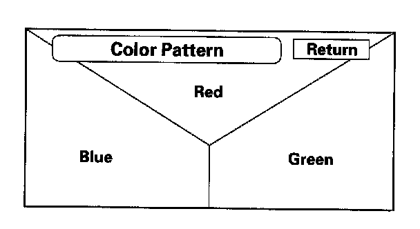
Color Pattern
The chart below shows the colors being used for the Map and Menu screens. This is for factory use only. To check the color signal use the "RGB" test.
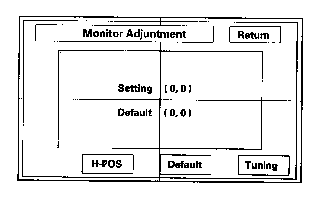
Monitor Adjustment
This allows you to center the navigation display. Use the joystick to move the picture up/down or left/right. It is unlikely that you will ever need to adjust the monitor position. The "Default" button will reset the display position to factory specifications. The factory default is 0, 0. The "H-POS" button is for factory use only.
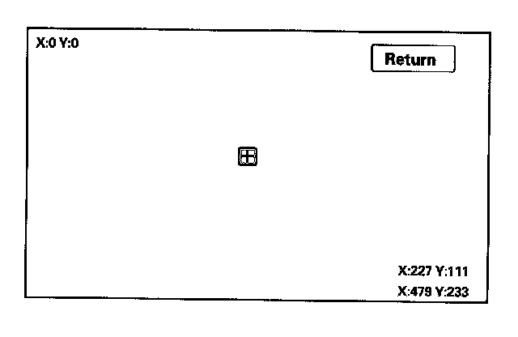
Touch Panel Check
The panel touch sensing system consists of a touch sensitive resistive membrane covering the display. Contrary to other systems using infrared beams, the screen has to be physically "touched" to make it work. The display has the capability of 479 touch locations (left to right), and 233 touch locations (top to bottom).
The upper left hand corner is position (0, 0) and the lower right hand corner is (479, 233) as displayed. Touching anywhere on the screen will display the "coordinate" of the location, and cause the place you touch to display a "+" icon. If any area of the screen either doesn't respond, or responds at some other location when touched, then replace the navigation unit.
NOTE: Unlike earlier screens that used infrared sensors, direct sunlight will not affect this test.
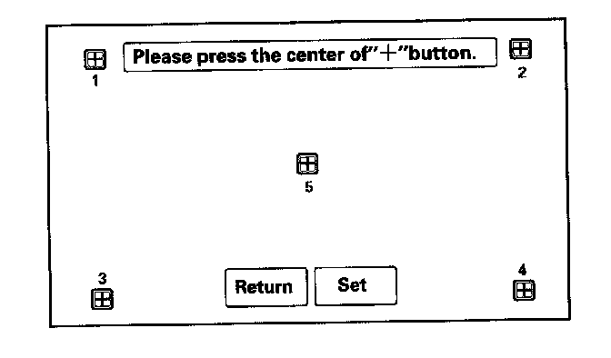
Touch Panel Calibration
The display screen uses a touch sensitive membrane. This means that every location of the entire surface of the display is touch sensitive. This diagnostic allows alignment of these touch locations with the location of the buttons images on the screen.
Normally this should never need adjustment, and is used only to adjust the touch locations for parallax (the touch locations appear different when viewed at an angle). However, if an adjustment is necessary, follow this procedure:
- The screen consists of the "+" button icons. Touch the center of the five "+" buttons on order 1-5.
- To store any change you make, touch the "Set" button.
- Use the Return key to exit the diagnostic.
Unit Check
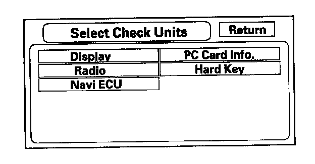
Select the item you want to check, and the test starts.
- Display
- Radio
- Navi ECU
- PC Card Info
- Hard Key
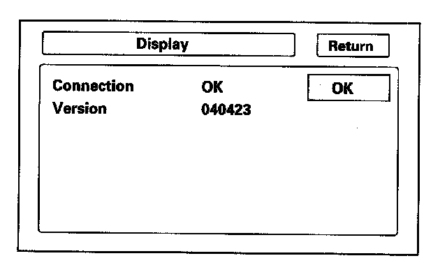
Display
This performs additional checks on the communication bus between the navi CPU and the display. In addition, the internal electronics and touch screen functionality are confirmed.
If the connection is NG, replace the navigation unit.
- Connection verifies internal communications.
- Version represents the software version for the display.
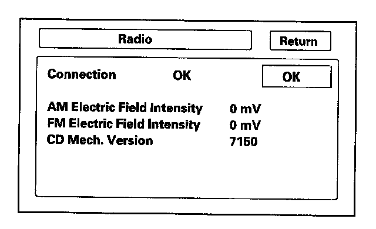
Radio
This diagnostic screen checks the internals of the radio (AM and FM) and CD player. If NG, replace the navigation unit.
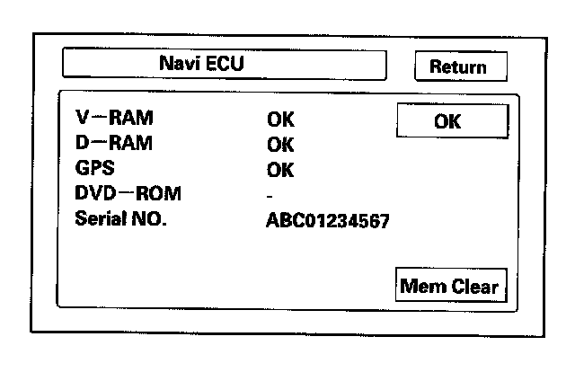
Navi ECU
This screen looks for problems with the navigation unit. When you initiate this diagnostic, the navigation unit may delay up to a minute while the diagnostic runs.
- If "V-RAM" or "D-RAM" is NG, then replace the navigation unit.
- If "GPS" indicates "NG (ANT)", then check the entire GPS antenna wire from the navigation unit to the antenna. If the wire is crushed or damaged, try a known-good antenna. If this diagnostic reads OK, then order a new GPS antenna. If the diagnostic still reads NG (ANT), then replace the navigation unit.
- DVD ROM" represents the database version on the DVD. You can also find this information in setup by selecting System Information.
- Serial No." should be the same as the serial number found on the underside of the navigation unit. You need this number to obtain the security code from the Interactive Network system.
- Mem Clear is for factory use, and should never be used unless instructed by the factory. Accidental selection will erase the customer's personal data, PINS, and settings. If selected, a popup box appears asking if you want to clear the memory. If so, select "Yes".
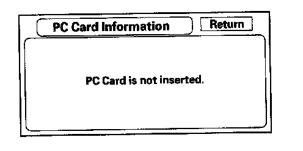
PC Card info
There is no PC Card in the PC slot, and the screen should say, "PC Card is not inserted".
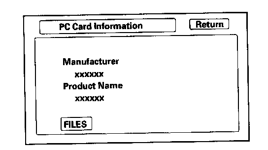
If the factory provides a PC card and instructs you to insert a card, then the screen displays the Manufacturer, and Product Name as shown in the given screen. Touch the "FILES" button to see the contents of the card.
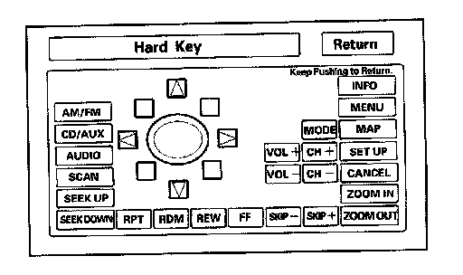
Hard Key
This diagnostic screen checks the status of each of the hard buttons surrounding the navigation display. When you press each hard button, the corresponding item on the screen should flash "blue". Touch the return key, or press and hold the joystick to exit.
NOTE: It is normal for the VOL (+, -) CH (+, -) and MODE button to be inactive.
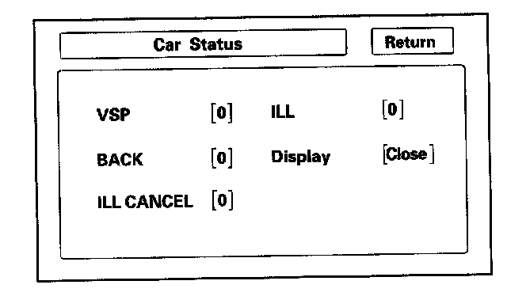
Car Status
Use this screen to confirm that navigation unit is properly receiving input signals. Signals equal to (0) are OFF, and signals equal to (1) are ON. If the value on the display does not match the actual vehicle status, then check the wire carrying the signal.
- VSP-Vehicle Speed Pulse from ECM/PCM connector A (Pin 13 of 17-Pin C-connector)
a. OFF (0) when vehicle is not moving
b. ON (1) when vehicle is moving
The VSP comes from the ECM/PCM as a dedicated signal. Internally, the navigation unit compares the actual VP on the map against street data to adjust the pulse to speed scaling factor.
- BACK-Reverse indication from taillight relay (Pin 7 of 12-Pin C-connector)
a. OFF (0) when shift lever is in any position other than reverse
b. ON (1) when shift lever is in reverse
The Back signal is used by the navigation unit to allow the map screen to show the VP moving backwards when in reverse and to trigger the optional rear view camera. This signal is needed because the Speed Pulse does not provide any directional information to the system.
- ILL CANCEL
a. OFF (0) when the gauge assembly brightness control is less than 90 % brightness.
b. ON (1) when the gauge assembly brightness knob is more than 90 % brightness.
- ILL-Illumination Indication (Pin 10 of navigation unit 17-Pin A-connector)
a. OFF (0)when parking lights, or headlights are off
b. ON (1) when parking lights, or headlights are on
The navigation unit uses the signal to determine whether to put the navigation screen into the Day or Night brightness mode. (Setup screen 1)
- Display-this displays the current position of the display
a. (Close) when the display is closed
b. (Open) when the display is open
The navigation unit has a microswitch to detect this. If open is indicated when the display is closed, replace the navigation unit.